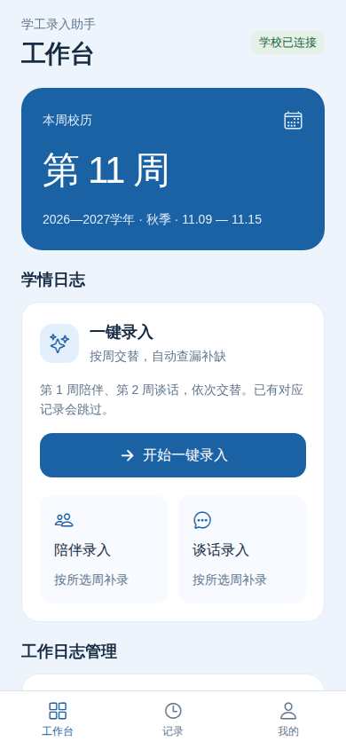
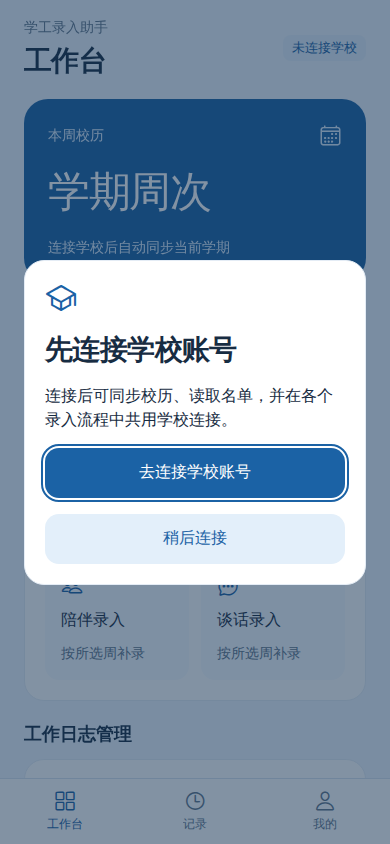
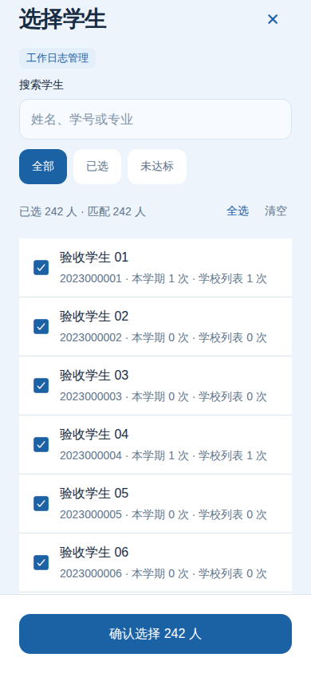
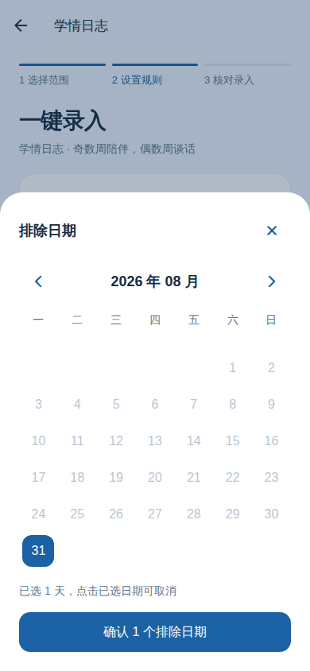
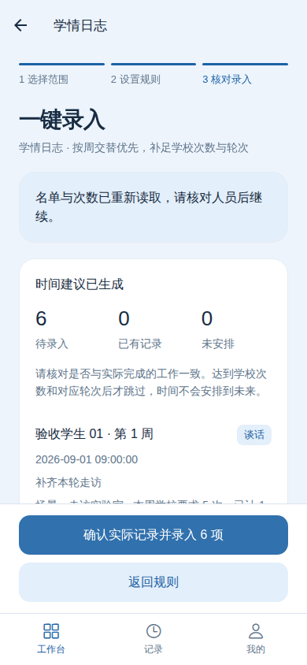
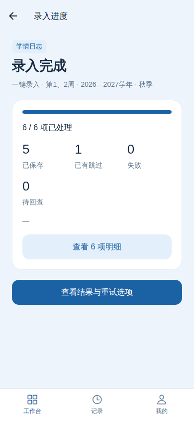

按周记录陪伴和谈话
一键录入：第 1 周陪伴、第 2 周谈话，依次交替；已有对应记录自动跳过。
只录一种：从“陪伴录入”或“谈话录入”进入。类型由入口决定，里面不用再选。
Android 版
学情日志、工作日志各用各的名单。
先连接学校，再读取、核对、录入。
Android 7.0 及以上 · 64 位 ARM 手机
安装包信息加载中 · 可覆盖安装上一测试版
安装包信息暂时无法加载，请刷新页面重试。

第一次使用
配图使用示例账号和示例学生，实际名单以你的学校账号为准。

连接成功后，学情、工作日志和校历共用学校连接，最长保留 24 小时。学校提前要求认证时，再次连接即可。
直接安装新版覆盖更新，保留应用数据。通常无需卸载；任务历史仍保留在原账户中。
先分清入口
两类日志的学生名单不同。请从对应入口进入，不要用一边的学生名单代替另一边。
一键录入：第 1 周陪伴、第 2 周谈话，依次交替；已有对应记录自动跳过。
只录一种：从“陪伴录入”或“谈话录入”进入。类型由入口决定，里面不用再选。
进入“学期谈话”，读取完整所带名单和本学期次数。
默认跳过已达到目标次数的学生，在已过去的可用工作日之间尽量均匀安排。

名单不会挤在表单里。选完返回后，可以直接填写后面的规则。

默认使用周一至周五 09:00–12:00、14:00–17:00，10 分钟内最多 2 人。只安排已经过去且已结束的时间，不会提前录入未来记录。

自动生成的是时间建议。请以实际工作为准，核对后再提交。生成预览和重新读取名单都不会新增学校记录。

任务明细会显示每人的状态、原因及取得的学校回执。
遇到问题
新版会自动返回范围页，重新读取名单和次数。仍在册的已选学生与填写的规则会保留，读取完成后，核对人员再继续生成新预览。它不会自动替你提交记录。
若网络或学校暂时不可用，页面会显示具体原因；恢复后重新读取即可。
学校的两套业务使用不同名册，学情名单还可能随周次变化。应用会分别读取，不把两边的学生混在一起。
不需要。进入统一的学校连接页面，连接成功后各业务共用。你也可以在“我的”中连接或切换学校账号。
可能没有足够的已过去工作时段、对应学校日志不可编辑，或学校要求的信息尚未补全。请查看预览或任务明细的具体原因；应用不会用未来时间补足数量。
在“我的 → 高级设置 → 迁移与恢复”中。日常录入不用操作，换机或重装需要恢复原账户时再使用。
需要 Android 7.0 及以上、64 位 ARM 手机。iPhone 无法安装 APK。
加载中
已完成自动化与浏览器交互检查。配图为同一套应用组件的示例界面；手机安装、键盘和原生日期控件仍需实机核对。